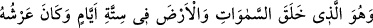

“–Ya Rab görme duyumu yok edip beni kör olarak yarattın. Rızkımı sen ver, çünkü
çok açım.” “diyor.”
Enes (r.a.) der ki: “Biz böylece kuşa bakarken, bir çekirge gelip kuşun ağzına girdi.
Kuş da onu yutuverdi. Sonra kuş başını kaldırdı ve şakımaya başladı. Hz. Peygamber
(a.s.) yine:
“Ey Enes, kuşun ne dediğini biliyor musun?” buyurdu.
Ben: “Allah ve Rasûlü daha iyi bilir.” diye cevap verdim. Bunun üzerine Rasûlullah
(s.a.):
“Kuş: “Kendisini zikredeni unutmayan Allah’a hamdolsun.” diyor.” buyurdu.
Başka bir rivayette ise:
“Kendisine tevekkül edene Allah kâfîdir.”[95] demiştir. İnsânu’l-uyûn’da böyle
geçmektedir.
Hz. Hüseyin (r.a.)’ın kılıcında şu dört cümlenin yazılı olduğu söylenir: “Rızık taksim
edilmiştir. Hırslı kimse mahrum kalır. Cimri yerilmiştir. Kıskanç ise daima kederlidir.”
Bir hadiste şöyle buyrulmuştur: “Aç ve muhtaç olup da bunu insanlardan gizleyip
Allah’a havale eden kimse için bir senelik rızık ihsan etmesi Allah üzerine bir borç
olur.”[96] Ravzatü’l-ulemâ’da böyle geçmektedir.
Meşâyıha göre rızık ve diğer konularda gerçek tevekkül, Allah Teâlâ’ya güvenerek
sebeplerden tamamen geçmektir. Yalnız böyle bir tevekkül anlayışı, havassa (seçkin
kimselere) ait bir anlayıştır. İnsanların genelinin ise sebeplere yapışmaları zaruridir.
Nitekim Mesnevî’de şöyle denilir:
Tevekkül ediyorsan çalışma konusunda et
Kazan da sonra Cebbâr’a dayan
Ayrıca insanın rızkı, hem cesedinin hem de ruhunun gıdasını içine alır.
Mesnevî’de şöyle denilir:
Bedene ait ağzı kaparsan, sende mânevî/rûhanî bir ağız açılır
O ağızla ilâhî sır ve mârifet lokmalarını yersin
Şu beden şeytanının sütünden kesilirsen,
Hakk’ın sofrasında nice akıl almaz nimetler yersin